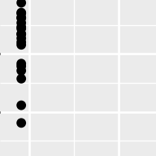

ANOVA
Questions
- How do I analyse multiple samples of continuous data?
- What is an ANOVA?
- How do I check for differences between groups?
Objectives
- Be able to perform an ANOVA in R
- Understand the ANOVA output and evaluate the assumptions
- Understand what post-hoc testing is and how to do this in R
Purpose and aim
Analysis of variance or ANOVA is a test than can be used when we have multiple samples of continuous response data. Whilst it is possible to use ANOVA with only two samples, it is generally used when we have three or more groups. It is used to find out if the samples came from parent distributions with the same mean. It can be thought of as a generalisation of the two-sample Student’s t-test.
Libraries and functions
| Libraries | Description |
|---|---|
library(tidyverse) |
A collection of R packages designed for data science |
library(rstatix) |
Converts base R stats functions to a tidyverse-friendly format. Also contains extra functionality that we’ll use. |
library(ggResidpanel) |
Creates diagnostic plots using ggplot2 |
| Library | Function | Description |
|---|---|---|
rstatix |
get_summary_stats() |
Computes summary statistics |
ggResidpanel |
resid_panel() |
Creates diagnostic plots |
| Function | Description |
|---|---|
lm() |
Fits a linear model |
anova() |
Carries out an ANOVA on a linear model |
qqnorm() |
Plots a Q-Q plot for comparison with a normal distribution. |
qqline() |
Adds a comparison line to the Q-Q plot. |
shapiro.test() |
Performs a Shapiro-Wilk test for normality. |
| Libraries | Description |
|---|---|
plotnine |
The Python equivalent of ggplot2. |
pandas |
A Python data analysis and manipulation tool. |
scipy.stats |
A Python module containing statistical functions. |
| Functions | Description |
|---|---|
pandas.DataFrame.read_csv |
Reads in a .csv file |
pandas.DataFrame.head() |
Plots the first few rows |
pandas.DataFrame.describe() |
Gives summary statistics |
pandas.DataFrame.groupby() |
Group DataFrame using a mapper or by a Series of columns |
pandas.DataFrame.query() |
Query the columns of a DataFrame with a boolean expression |
scipy.stats.levene() |
Performs Levene’s test for equality of variance |
Data and hypotheses
For example, suppose we measure the feeding rate of oyster catchers (shellfish per hour) at three sites characterised by their degree of shelter from the wind, imaginatively called exposed (E), partially sheltered (P) and sheltered (S). We want to test whether the data support the hypothesis that feeding rates don’t differ between locations. We form the following null and alternative hypotheses:
- \(H_0\): The mean feeding rates at all three sites is the same \(\mu E = \mu P = \mu S\)
- \(H_1\): The mean feeding rates are not all equal.
We will use a one-way ANOVA test to check this.
- We use a one-way ANOVA test because we only have one predictor variable (the categorical variable location).
- We’re using ANOVA because we have more than two groups and we don’t know any better yet with respect to the exact assumptions.
The data are stored in the file data/CS2-oystercatcher.csv.
Summarise and visualise
First we read in the data.
# load data
oystercatcher <- read_csv("data/CS2-oystercatcher-feeding.csv")
# and have a look
oystercatcher# A tibble: 120 × 2
site feeding
<chr> <dbl>
1 exposed 12.2
2 exposed 13.1
3 exposed 17.9
4 exposed 13.9
5 exposed 14.1
6 exposed 18.4
7 exposed 15.0
8 exposed 10.3
9 exposed 11.8
10 exposed 12.5
# … with 110 more rowsThe oystercatcher data set contains two columns:
- a
sitecolumn with information on the amount of shelter of the feeding location - a
feedingcolumn containing feeding rates
Next, we get some basic descriptive statistics:
# get some basic descriptive statistics
oystercatcher %>%
group_by(site) %>%
get_summary_stats(type = "common")# A tibble: 3 × 11
site variable n min max median iqr mean sd se ci
<chr> <chr> <dbl> <dbl> <dbl> <dbl> <dbl> <dbl> <dbl> <dbl> <dbl>
1 exposed feeding 40 8.35 18.6 13.9 3.40 13.8 2.44 0.386 0.781
2 partial feeding 40 10.8 23.0 16.9 2.82 17.1 2.62 0.414 0.838
3 sheltered feeding 40 18.9 28.5 23.2 3.79 23.4 2.42 0.383 0.774Finally, we plot the data by site:
# plot the data
oystercatcher %>%
ggplot(aes(x = site, y = feeding)) +
geom_boxplot()
First we read in the data.
# load data
oystercatcher_r <- read.csv("data/CS2-oystercatcher-feeding.csv")
# have a look
head(oystercatcher_r) site feeding
1 exposed 12.17551
2 exposed 13.07392
3 exposed 17.93969
4 exposed 13.89178
5 exposed 14.05166
6 exposed 18.36498The oystercatcher data set contains two columns:
- a
sitecolumn with information on the amount of shelter of the feeding location - a
feedingcolumn containing feeding rates
Next, we get some basic descriptive statistics. We have three groups, so to get the summary statistics by group we do the following:
aggregate(feeding ~ site,
data = oystercatcher_r,
summary) site feeding.Min. feeding.1st Qu. feeding.Median feeding.Mean
1 exposed 8.350801 12.184961 13.946420 13.822899
2 partial 10.795969 15.601927 16.927683 17.081666
3 sheltered 18.856999 21.403028 23.166246 23.355503
feeding.3rd Qu. feeding.Max.
1 15.581748 18.560404
2 18.416708 23.021250
3 25.197096 28.451252Finally, we plot the data by site:
# plot the data by site
boxplot(feeding ~ site,
data = oystercatcher_r)
Looking at the data, there appears to be a noticeable difference in feeding rates between the three sites. We would probably expect a reasonably significant statistical result here.
Assumptions
To use an ANOVA test, we have to make three assumptions:
- The parent distributions from which the samples are taken are normally distributed
- Each data point in the samples is independent of the others
- The parent distributions should have the same variance
In a similar way to the two-sample tests we will consider the normality and equality of variance assumptions both using tests and by graphical inspection (and ignore the independence assumption).
Normality
First we perform a Shapiro-Wilk test on each site separately.
# Shapiro-Wilk test on each site
oystercatcher %>%
group_by(site) %>%
shapiro_test(feeding)Unstack the data and perform a Shapiro-Wilk test on each group separately.
# create a new object (a list) that contains the unstacked data
uns_oystercatcher <- unstack(oystercatcher_r,
form = feeding ~ site)
# have a look at the data
head(uns_oystercatcher) exposed partial sheltered
1 12.17551 15.20345 23.87176
2 13.07392 16.53239 21.41133
3 17.93969 13.64547 22.46681
4 13.89178 23.02125 23.00843
5 14.05166 20.39774 27.85932
6 18.36498 14.03391 22.09400Next, we perform the Shapiro-Wilk test on each group:
shapiro.test(uns_oystercatcher$exposed)
Shapiro-Wilk normality test
data: uns_oystercatcher$exposed
W = 0.98859, p-value = 0.953shapiro.test(uns_oystercatcher$partial)
Shapiro-Wilk normality test
data: uns_oystercatcher$partial
W = 0.98791, p-value = 0.9398shapiro.test(uns_oystercatcher$sheltered)
Shapiro-Wilk normality test
data: uns_oystercatcher$sheltered
W = 0.97511, p-value = 0.5136We can see that all three groups appear to be normally distributed which is good.
For ANOVA however, considering each group in turn is often considered quite excessive and, in most cases, it is sufficient to consider the normality of the combined set of residuals from the data. We’ll explain residuals properly in the next session but effectively they are the difference between each data point and its group mean. The residuals can be obtained directly from a linear model fitted to the data.
So, we create a linear model, extract the residuals and check their normality:
# define the model
lm_oystercatcher <- lm(feeding ~ site,
data = oystercatcher)
# extract the residuals
resid_oyster <- residuals(lm_oystercatcher)
# perform Shapiro-Wilk test on residuals
resid_oyster %>%
shapiro_test()# A tibble: 1 × 3
variable statistic p.value
<chr> <dbl> <dbl>
1 . 0.994 0.857# define the model
lm_oystercatcher_r <- lm(feeding ~ site,
data = oystercatcher_r)
# extract the residuals
resid_oyster_r <- residuals(lm_oystercatcher_r)
# perform Shapiro-Wilk test on residuals
shapiro.test(resid_oyster_r)
Shapiro-Wilk normality test
data: resid_oyster_r
W = 0.99355, p-value = 0.8571Again, we can see that the combined residuals from all three groups appear to be normally distributed (which is as we would have expected given that they were all normally distributed individually!)
Equality of Variance
We now test for equality of variance using Bartlett’s test (since we’ve just found that all of the individual groups are normally distributed).
Perform Bartlett’s test on the data:
# check equality of variance
bartlett.test(feeding ~ site,
data = oystercatcher)
Bartlett test of homogeneity of variances
data: feeding by site
Bartlett's K-squared = 0.29598, df = 2, p-value = 0.8624Where the relevant p-value is given on the 3rd line. Here we see that each group do appear to have the same variance.
# check equality of variance
bartlett.test(feeding ~ site,
data = oystercatcher)
Bartlett test of homogeneity of variances
data: feeding by site
Bartlett's K-squared = 0.29598, df = 2, p-value = 0.8624Where the relevant p-value is given on the 3rd line. Here we see that each group do appear to have the same variance.
Graphical interpretation and diagnostic plots
R provides a convenient set of graphs that allow us to assess these assumptions graphically.
In the first session we already created diagnostic Q-Q plots directly from our data, using stat_qq() and stat_qq_line(). For more specific plots this becomes a bit cumbersome. There is an option to create ggplot-friendly diagnostic plots, using the ggResidPanel package.
Let’s create the diagnostic plots we’re interested in using ggResidPanel:
lm_oystercatcher %>%
resid_panel(plots = c("resid", "qq", "ls", "cookd"),
smoother = TRUE)
- The top left graph plots the Residuals plot. If the data are best explained by a linear line then there should be a uniform distribution of points above and below the horizontal blue line (and if there are sufficient points then the red line, which is a smoother line, should be on top of the blue line). This plot looks pretty good.
- The top right graph shows the Q-Q plot which allows a visual inspection of normality. If the residuals are normally distributed, then the points should lie on the diagonal blue line. This plot looks good.
- The bottom left Location-scale graph allows us to investigate whether there is any correlation between the residuals and the predicted values and whether the variance of the residuals changes significantly. If not, then the red line should be horizontal. If there is any correlation or change in variance then the red line will not be horizontal. This plot is fine.
- The last graph shows the Cook’s distance and tests if any one point has an unnecessarily large effect on the fit. A rule of thumb is that if any value is larger than 1.0, then it might have a large effect on the model. If not, then no point has undue influence. This plot is good. There are different ways to determine the threshold (apart from simply setting it to 1) and in this plot the blue dashed line is at
4/n, withnbeing the number of samples. At this threshold there are some data points that may be influential, but I personally find this threshold rather strict.
We can create the default diagnostic plots in base R by simply plotting the lm object.
# create a neat 2x2 window
par(mfrow = c(2,2))
# create the diagnostic plots
plot(lm_oystercatcher)
# and return the window back to normal
par(mfrow = c(1,1))The second line creates four diagnostic plots.
- The top left graph plots the Residuals vs Fitted. If the data are best explained by a linear line then there should be a uniform distribution of points above and below the horizontal red line. This plot looks pretty good.
- The top right graph shows the Normal Q-Q plot which allows a visual inspection of normality. If the residuals are normally distributed, then the points should lie on the diagonal dotted line. This plot looks good.
- The bottom left Scale-Location graph allows us to investigate whether there is any correlation between the residuals and the predicted values and whether the variance of the residuals changes significantly. If not, then the red line should be horizontal. If there is any correlation or change in variance then the red line will not be horizontal. This plot is fine.
- The bottom right Residuals vs Factor Levels plot shows the residuals for each group (= site). This plot is only displayed if there are equal number of observations in each group and we’ll explain more about this in the next session.
We can see that these graphs are very much in line with what we’ve just looked at using the test, which is reassuring. The groups all appear to have the same spread of data, and whilst the Q-Q plot isn’t perfect, it appears that the assumption of normality is alright.
At this stage, I should point out that I nearly always stick with the graphical method for assessing the assumptions of a test. Assumptions are rarely either completely met or not met and there is always some degree of personal assessment.
Whilst the formal statistical tests (like Shapiro-Wilk) are technically fine, they can often create a false sense of things being absolutely right or wrong in spite of the fact that they themselves are still probabilistic statistical tests. In these exercises we are using both approaches whilst you gain confidence and experience in interpreting the graphical output and whilst it is absolutely fine to use both in the future I would strongly recommend that you don’t rely solely on the statistical tests in isolation.
Implement and interpret the test
Perform an ANOVA test on the data:
anova(lm_oystercatcher)Analysis of Variance Table
Response: feeding
Df Sum Sq Mean Sq F value Pr(>F)
site 2 1878.02 939.01 150.78 < 2.2e-16 ***
Residuals 117 728.63 6.23
---
Signif. codes: 0 '***' 0.001 '**' 0.01 '*' 0.05 '.' 0.1 ' ' 1This takes the linear model (i.e. finds the means of the three groups and calculates a load of intermediary data that we need for the statistical analysis) and stores this information in an R object (which we’ve called lm_oystercatcher, but which you can call what you like).
In the output:
- The 1st line just tells you the that this is an ANOVA test
- The 2nd line tells you what the response variable is (in this case feeding)
- The 3rd, 4th and 5th lines are an ANOVA table which contain some useful values:
- The
Dfcolumn contains the degrees of freedom values on each row, 2 and 117 (which we can use for the reporting) - The
Fvalue column contains the F statistic, 150.78 (which again we’ll need for reporting). - The p-value is 2.2e-16 and is the number directly under the
Pr(>F)on the 4th line (to be precise, it is 4.13e-33 but anything smaller than 2.2e-16 gets reported as< 2.2e-16). - The other values in the table (in the
Sum SqandMean Sq) columns are used to calculate the F statistic itself and we don’t need to know these.
- The
- The 6th line has some symbolic codes to represent how big (small) the p-value is; so, a p-value smaller than 0.001 would have a *** symbol next to it (which ours does). Whereas if the p-value was between 0.01 and 0.05 then there would simply be a * character next to it, etc. Thankfully we can all cope with actual numbers and don’t need a short-hand code to determine the reporting of our experiments (please tell me that’s true…!)
anova(lm_oystercatcher_r)Analysis of Variance Table
Response: feeding
Df Sum Sq Mean Sq F value Pr(>F)
site 2 1878.02 939.01 150.78 < 2.2e-16 ***
Residuals 117 728.63 6.23
---
Signif. codes: 0 '***' 0.001 '**' 0.01 '*' 0.05 '.' 0.1 ' ' 1This takes the linear model (i.e. finds the means of the three groups and calculates a load of intermediary data that we need for the statistical analysis) and stores this information in an R object (which we’ve called lm_oystercatcher_r, but which you can call what you like).
In the output:
- The 1st line just tells you the that this is an ANOVA test
- The 2nd line tells you what the response variable is (in this case feeding)
- The 3rd, 4th and 5th lines are an ANOVA table which contain some useful values:
- The
Dfcolumn contains the degrees of freedom values on each row, 2 and 117 (which we can use for the reporting) - The
Fvalue column contains the F statistic, 150.78 (which again we’ll need for reporting). - The p-value is 2.2e-16 and is the number directly under the
Pr(>F)on the 4th line (to be precise, it is 4.13e-33 but anything smaller than 2.2e-16 gets reported as< 2.2e-16). - The other values in the table (in the
Sum SqandMean Sq) columns are used to calculate the F statistic itself and we don’t need to know these.
- The
- The 6th line has some symbolic codes to represent how big (small) the p-value is; so, a p-value smaller than 0.001 would have a *** symbol next to it (which ours does). Whereas if the p-value was between 0.01 and 0.05 then there would simply be a * character next to it, etc. Thankfully we can all cope with actual numbers and don’t need a short-hand code to determine the reporting of our experiments (please tell me that’s true…!)
Again, the p-value is what we’re most interested in here and shows us the probability of getting samples such as ours if the null hypothesis were actually true.
Since the p-value is very small (much smaller than the standard significance level of 0.05) we can say “that it is very unlikely that these three samples came from the same parent distribution” and as such we can reject our null hypothesis and state that:
A one-way ANOVA showed that the mean feeding rate of oystercatchers differed significantly between locations (F = 150.78, df = 2, 117, p = 4.13e-33).